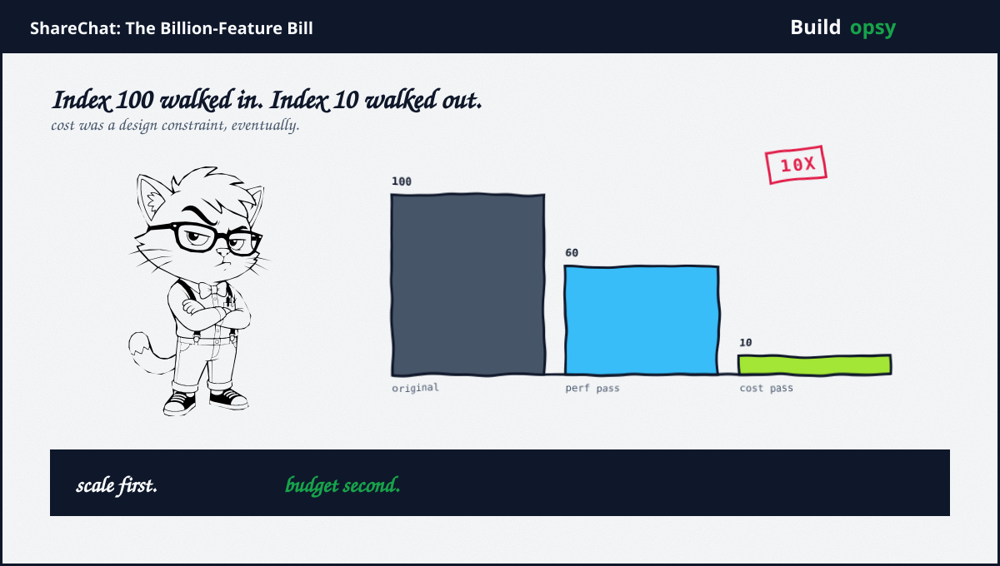
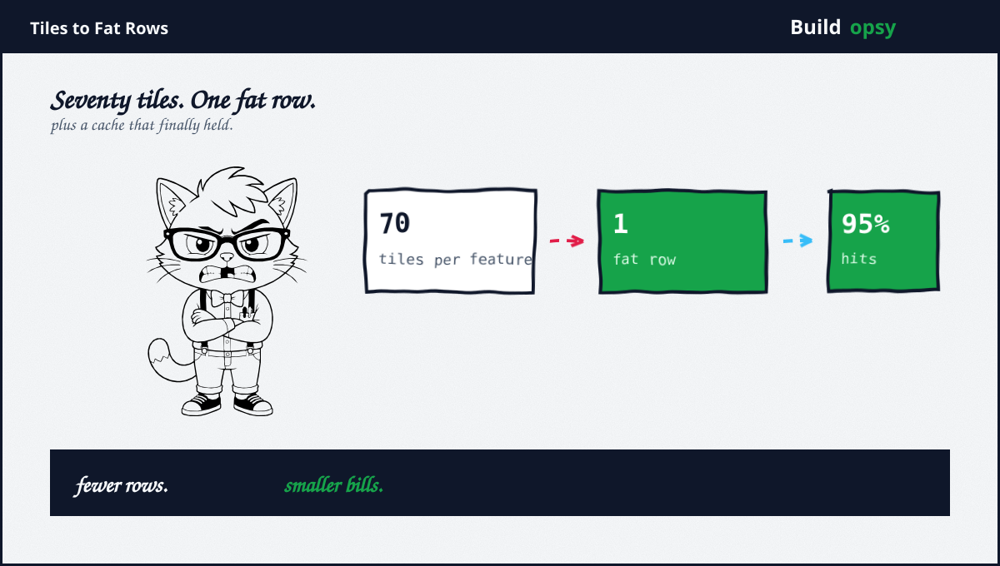

1. The Review After the Applause
Picture the scene, because every data engineer has lived some version of it. Your team just did the impossible. The feature store went from a million features a second to a billion, a thousandfold climb, without adding a single database node. Somebody brings sweets. Somebody says the words you will remember for years. Great system. Now please make it ten times cheaper.
I confess a tenderness for this moment. The first climb proved the team could scale. The second assignment proved whether they understood what they had built. Anybody can buy headroom. Reading your own architecture well enough to delete 90 percent of its cost while it serves a billion requests a second, that is comprehension with a deadline. ShareChat engineers have now published both halves of the story, which is why this file exists.
2. How the Machine Worked
The feature store feeds content recommendations with near-real-time signals: likes, views, plus counters across time windows. Underneath sit tiles, pre-aggregated buckets per minute or per range, computed over Flink streams from more than two billion daily events. A feature service answers ranking requests against ScyllaDB plus caches what it computes. At peak the system serves close to a billion features a second at p99 under 20ms while reading over 30 billion rows a day. Those are the published operating numbers. Sit with them a moment. Thirty billion rows a day. Somebody decided that was the expensive shape of the problem.
The first scaling war nearly ended the project. The initial schema gave every feature its own row, so one ranking request fanned into roughly 70 tile fetches per feature. At a million features a second the system fell over with latencies through the roof. The fix was a schema insight wearing work clothes: features requested together should sleep together. Fat rows packed co-requested features into single protobuf values per tile. Row reads fell from around 2 billion a second to 200 million, a hundredfold cut from naming things better. Leveled compaction doubled effective capacity on top. When the database still looked small, the team refused the obvious 4x scale-up because the budget said no, then kept going.

Cache locality came next. Here my affection for this team deepened. A two-step hash spread entities across pods for locality, then the team split the feature service into 27 pieces with client-side entity routing. Practical, inelegant, devastatingly effective: 95 percent cache hits plus ScyllaDB load down to 18.4 million rows a second. A billion features a second by March, with headroom the team measured toward three billion. Scale solved. Then the applause. Then the assignment.
Run the serving shape through the RPS envelope calculator to feel the stakes. A billion events a second across a month is a number with twelve digits before the decimal point of any price. At that scale the database row is the unit of money, which is why every optimization above reads as finance wearing an engineering costume.
3. The Bill Autopsy
The cost pass started where cloud bills always hide: the network between zones. ShareChat calls inter-zone egress the cloud tax. At their traffic the tax office always wins. Isolating reads plus writes into separate data centers would have doubled infrastructure for cleaner latency graphs. They declined the pretty option. Continuous profiling instead found over half the serving compute to delete. Backfill jobs spiking read latency got isolation thinking rather than hardware. Flink autoscaling finally matched stream workers to actual load instead of peak imagination.
Great system. Now please make it ten times cheaper.The assignment, as reported by The New Stack
The sibling saga, the recommendation engine, cut deeper because it started from managed everything: Bigtable, Dataflow, plus Pub/Sub. Lovely for prototyping, punishing at 300 million users. Dataflow streaming jobs moved to self-run Flink for a 93 percent cost cut. Bigtable gave way to provisioned ScyllaDB, cheaper even fully provisioned, with workload prioritization shaving queue costs by roughly two thirds. Post IDs got delta compression after Bloom filters failed on false positives plus Roaring Bitmaps failed on distribution: storage down 60 percent, CPU down 25 percent, that subsystem to a fifth of its cost. Sent posts moved out of Redis once somebody proved ScyllaDB cheaper per gigabyte. Latency fell from 40ms to 8ms p99 while infrastructure fell to a tenth over about a year. Faster plus cheaper is supposed to be impossible. It took a year of refusing that premise.
4. The Ledger
| Reported | What it means |
|---|---|
| 1M to 1B features a second, no DB growth | Schema plus caching absorbed three orders of magnitude. Hardware stayed flat. |
| 2B down to 18.4M rows a second | Fat rows removed the features multiplier. Cache locality removed the rest. |
| 95 percent cache hit rate | Twenty-seven services with client-routed entities. Locality by construction. |
| Streaming cost down 93 percent | Managed Dataflow exited for self-run Flink. Operations burden accepted deliberately. |
| Infrastructure to a tenth, 40ms to 8ms | Compression, engine swaps, plus Redis exit compounded. Speed followed cost. |
5. What to Steal
First, store what is requested together, together. Audit the fan-in of the hottest request before touching hardware. Seventy fetches per feature was never a database problem. It was a naming problem with a cluster attached.
Second, make cost a design constraint from the tile up, not a review topic after launch. Every optimization above was available on day one. What arrived later was permission to care. Give that permission early.
Third, distrust managed pricing at stable scale. Prototyping bills differ from steady-state bills by orders of magnitude. Reprice every managed service yearly against self-run alternatives, with operations burden on the same spreadsheet.
Fourth, profile before purchasing. Half the serving compute deleted itself under a profiler. The cheapest node is the one continuous profiling proves unnecessary.
Fifth, consolidate onto engines you can run hot. Thirty clusters at 80 to 100 percent utilization beat a hundred clusters at 30 percent. Utilization is a cost strategy wearing an operations costume.
6. The Verdict
I keep returning to the emotional shape of this story. Most cost sagas read as apologies. This one reads as craft. A team scaled a thousandfold on wit, then cut tenfold on discipline, then published both halves with numbers attached. The industry usually hides either the scale or the spend. ShareChat itemized both.
The lesson I carry into every pipeline review: the row is the rupee, the tile is the tax form, plus the cache is the only honest employee. Design like the bill arrives monthly, because it does. The boundary between engineering plus finance was always imaginary. This team simply stopped pretending.
Scale first if you must. Budget second if you are lucky. Understand both, always.
Sources and Method
This postmortem follows ShareChat engineering publications, conference talks, plus ScyllaDB case coverage. Throughput figures plus optimization steps come from the published accounts. Cost framing is modeled from public cloud list prices.